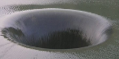
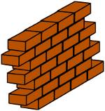

<ul>
  <li>Image à partir de laquelle le logo du site a été créé <a href="http://lilemangas.centerblog.net">«lilemangas»</a> : 
  <a href="./logo-source.png"></a></li>

  <li>Séquence d'images pour l'explosion <a href="http://corigif.free.fr/explosion/explosion_01.htm">«corigif»</a> : <a href="http://corigif.free.fr/explosion/img/explos_010.gif"></a></li>

  <li>Image récupérée sur <a href="http://www.id2sorties.com">«id2sorties»</a> : <a href="./trou-eau.png"></a></li>

  <li>Images récupérées sur <a href="http://openclipart.org">«open clipart»</a> : <br/><table><tr>
    <td></td>
    <td></td>
    <td></td>
    <td></td>
    <td></td>
    <td></td>
  </tr></table></li>

  <li>Polices de caractère téléchargées  sur : <a href="http://coolgrafik.com">«coolgrafik.com»</a> <i>LHF DEF artiste base</i>, <i>Searfont</i>.</li>
</ul>
